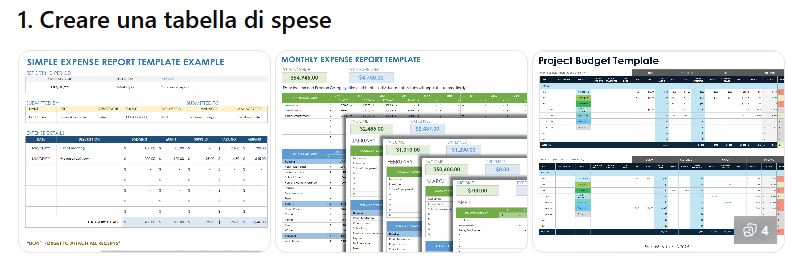
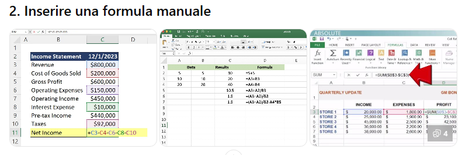

In questo esercizio imparerai a utilizzare le formule di base in Excel e lo strumento Somma automatica per eseguire semplici calcoli veloci.
Al termine dell'attività sarai in grado di:

Apri Excel e crea una cartella di lavoro vuota. Inserisci i seguenti dati rispettando le posizioni indicate:
| A (Prodotto) | B (Prezzo) | |
| 2 | Quaderno | 2 |
| 3 | Penna | 1 |
| 4 | Matita | 1 |
| 5 | Evidenziatore | 3 |
| 6 | TOTALE | (da calcolare) |

In Excel tutte le formule iniziano con il segno =. Per sommare i prezzi:
Premi Invio. Excel calcolerà immediatamente il risultato.
Esiste un metodo molto più veloce, specialmente per tabelle lunghe:
Premi Invio per confermare.
Analizziamo la formula =SOMMA(B2:B5):
Excel aggiorna automaticamente i calcoli se i dati cambiano. Prova a modificare il prezzo del Quaderno da 2 a 4 e premi Invio: vedrai il totale aggiornarsi istantaneamente a 9.
La tua tabella completa dovrebbe apparire così:
| Prodotto | Prezzo |
| Quaderno | 2 |
| Penna | 1 |
| Matita | 1 |
| Evidenziatore | 3 |
| Totale | 7 |